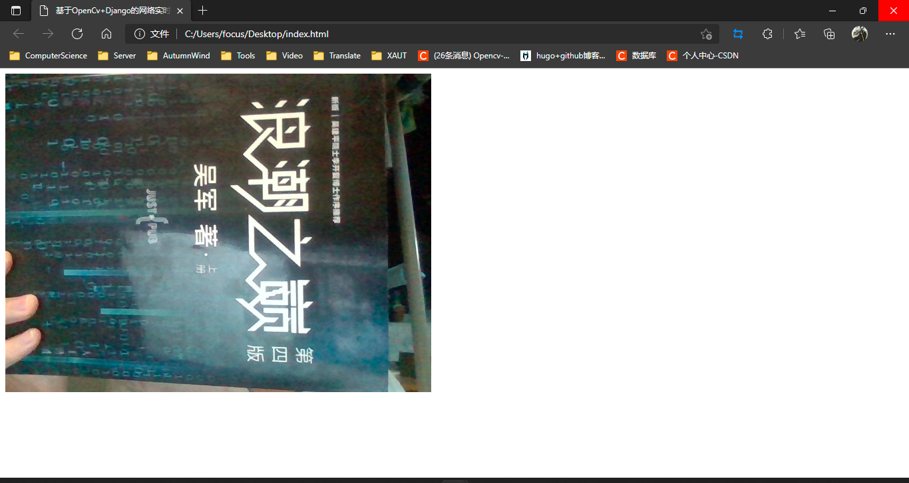
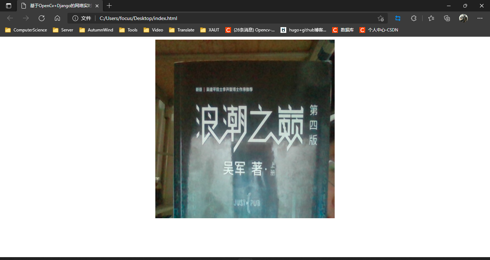

使用OpenCv捕获摄像机画面后，我们有时候需要将画面显示在界面上。本博客基于Django的前后端分离模式，将视频流从后端读取，传送给前端显示。
Django流传输实例：StreamingHttpResponse
在使用Django进行视频流传输时，无法使用HttpResponse，JsonResponse等对象对内容直接传输，需要使用StreamingHttpResponse流式传输一个响应给浏览器。StreamingHttpResponse不是HttpResponse的子类，因此他们之间的API略有不同。StreamingHttpResponse与HttpResponse之间有以下显著区别：
- 应该给StreamingHttpResponse一个迭代器，产生字节字符串作为内容。
- 不应该直接访问StreamingHttpResponse的内容，除非通过迭代器响应对象本身。
- StreamingHttpResponse没有content属性。相反，他有一个streaming_content属性。
- 无法使用类文件对象的tell()何write()方法。这样会引起一个异常。
Django传输视频流
因为使用Django的StreamingHttpResponse类进行流传输，所以我们首先需要生成一个视频流的迭代器，在迭代器中，需要将从opencv中获取到的numpy.ndarray三维数组转换为字节类型的，然后传输到前端。
传输视频流：
- 读取图片
- 图片压缩（针对分辨率较高的界面）
- 对图片进行解码
- 转换为byte类型
- 传输视频流
1
2
3
4
5
6
7
8
9
10
11
12
13
14
15
16
17
18
19
20
21
22
23
24
25
26
27
28
29
|
import cv2
from django.http import StreamingHttpResponse
def gen_display(camera):
"""
视频流生成器功能。
"""
while True:
# 读取图片
ret, frame = camera.read()
if ret:
# 将图片进行解码
ret, frame = cv2.imencode('.jpeg', frame)
if ret:
# 转换为byte类型的，存储在迭代器中
yield (b'--frame\r\n'
b'Content-Type: image/jpeg\r\n\r\n' + frame.tobytes() + b'\r\n')
def video(request):
"""
视频流路由。将其放入img标记的src属性中。
例如：<img src='https://ip:port/uri' >
"""
# 视频流相机对象
camera = cv2.VideoCapture(0)
# 使用流传输传输视频流
return StreamingHttpResponse(gen_display(camera), content_type='multipart/x-mixed-replace; boundary=frame')
|
在使用海康威视等分辨率较高的相机时，直接解码，延迟过高，所以需要先对图片进行压缩，然后解码。
经测试，海康相机使用0.25的压缩倍率显示压缩效率较好，当大于0.25时，延迟较高，小于0.25时，界面显示较差
迭代器优化：
1
2
3
4
5
6
7
8
9
10
11
12
13
14
15
|
def gen_display(camera):
"""
视频流生成器功能。
"""
while True:
# 读取图片
ret, frame = camera.read()
if ret:
frame = cv2.resize(frame, (0, 0), fx=0.25, fy=0.25)
# 将图片进行解码
ret, frame = cv2.imencode('.jpeg', frame)
if ret:
# 转换为byte类型的，存储在迭代器中
yield (b'--frame\r\n'
b'Content-Type: image/jpeg\r\n\r\n' + frame.tobytes() + b'\r\n')
|
前端显示视频流
在Django中配置路由后，在浏览器端直接访问视频url即可看到视频显示画面。
在前端HTML5中，将视频路由写入img标签的src属性中，即可访问视频流界面。例如：<img src=‘https://ip:port/uri’
前端显示视频流：
1
2
3
4
5
6
7
8
9
10
11
12
13
|
<!DOCTYPE html>
<html lang="en">
<head>
<meta charset="UTF-8">
<meta http-equiv="X-UA-Compatible" content="IE=edge">
<meta name="viewport" content="width=device-width, initial-scale=1.0">
<title>基于OpenCv+Django的网络实时视频流传输（前后端分离）</title>
</head>
<body>
<!-- 显示视频流 -->
<img src="http://127.0.0.1:8000/api/cv/display">
</body>
</html>
|
显示结果：

在前端显示视频流中，可以通过调整img标签的属性来调整界面显示位置，显示大小。所以在进行视频流前后端传输中，在保证视频显示清晰度的情况下，建议使用前端来调整界面大小。
调整界面前端显示视频样式：
1
2
3
4
5
6
7
8
9
10
11
12
13
14
15
16
17
18
19
|
<!DOCTYPE html>
<html lang="en">
<head>
<meta charset="UTF-8">
<meta http-equiv="X-UA-Compatible" content="IE=edge">
<meta name="viewport" content="width=device-width, initial-scale=1.0">
<title>基于OpenCv+Django的网络实时视频流传输（前后端分离）</title>
<style>
#video {
width: 500px;
height: 500px;
}
</style>
</head>
<body>
<!-- 显示视频流 -->
<div align="center"><img src="http://127.0.0.1:8000/api/cv/display" id="video"></div>
</body>
</html>
|
显示结果：

视频流传输优化
在项目中，我们可能经常需要对多个相机进行处理，而不是对一个相机进行操作，所以我们可以使用相机工厂来获取相机。在实例化相机后，需要开启一个线程，及时更新缓存队列，确保OpenCv不会因为缓存过多而造成缓存区堵塞，界面延迟。
- 使用线程实时读取OpenCv的内容到队列中
- 使用相机工厂来获取相机
在示例代码中，camera_model为自定义model，其中代码需要用到的数据有数据表记录的唯一标识id，相机的访问api：camera_api
相机类：
1
2
3
4
5
6
7
8
9
10
11
12
13
14
15
16
17
18
19
20
21
22
23
24
25
26
27
28
29
30
31
32
33
34
35
36
37
38
39
40
41
42
43
44
45
46
47
48
49
50
51
52
53
54
55
56
57
58
59
60
61
62
63
64
65
66
67
68
69
70
71
72
73
74
75
76
77
78
79
80
81
82
83
84
85
86
87
88
89
90
91
92
93
94
95
96
97
98
99
100
101
102
103
104
105
106
107
108
109
110
111
112
113
114
115
116
117
118
119
120
121
122
123
124
125
126
127
128
|
import queue
import threading
import cv2
from apps.device.models import Camera
class CameraException(Exception):
message = None
# 初始化异常
def __init__(self, message: str):
# 初始化异常，定位异常信息描述
self.message = message
def __str__(self):
return self.message
class BaseCamera:
# 相机操作对象
cam = None
# 保存每一帧从rtsp流中读取到的画面，使用opencv读取，为BGR图片
queue_image = queue.Queue(maxsize=10)
# 后台取帧线程
thread = None
# 相机Model
camera_model = None
# 相机基类
def __init__(self, camera_model: Camera):
"""
使用rtsp流初始化相机参数
rtsp格式：rtsp://[username]:[password]@[ip]:[port]/[codec]/[channel]/[subtype]/av_stream
username: 用户名。例如admin。
password: 密码。例如12345。
ip: 为设备IP。例如 192.0.0.64。
port: 端口号默认为554，若为默认可不填写。
codec：有h264、MPEG-4、mpeg4这几种。
channel: 通道号，起始为1。例如通道1，则为ch1。
subtype: 码流类型，主码流为main，辅码流为sub。
"""
self.cam = cv2.VideoCapture(camera_model.camera_api)
if self.cam.isOpened():
# 相机打开成功,启动线程读取数据
self.thread = threading.Thread(target=self._thread, daemon=True)
self.thread.start()
else:
# 打开失败，相机流错误
raise CameraException("视频流接口访问失败")
def _thread(self):
"""
相机后台进程，持续读取相机
opencv读取时会将信息存储到缓存区里，处理速度小于缓存区速度，会导致资源积累
"""
# 线程一直读取视频流，将最新的视频流存在队列中
while self.cam.isOpened():
ret, img = self.cam.read()
if not ret or img is None:
# 读取相机失败
pass
else:
# 读取内容成功，将数据存放在缓存区
if self.queue_image.full():
# 队列满，队头出队
self.queue_image.get()
# 队尾添加数据
self.queue_image.put(img)
else:
# 队尾添加数据
self.queue_image.put(img)
# 直接读取图片
def read(self):
"""
直接读取从rtsp流中获取到的图片，不进行额外加工
可能为空，需做判空处理
"""
return self.queue_image.get()
# 读取视频帧
def get_frame(self):
"""
获取加工后的图片，可以直接返回给前端显示
"""
img = self.queue_image.get()
if img is None:
return None
else:
# 压缩图片，否则图片过大，编码效率慢，视频延迟过高
img = cv2.resize(img, (0, 0), fx=0.25, fy=0.25)
# 对图片进行编码
ret, jpeg = cv2.imencode('.jpeg', img)
return jpeg.tobytes()
class CameraFactory:
"""
相机工厂
"""
# 存储实例化的所有相机
cameras = {}
@classmethod
def get_camera(cls, camera_id: int):
# 通过相机id获取相机
camera = cls.cameras.get(camera_id)
if camera is None:
# 查看是否存在相机，存在访问
try:
camera_model = Camera.objects.get(id=camera_id)
base_camera = BaseCamera(camera_model=camera_model)
if base_camera is not None:
cls.cameras.setdefault(camera_id, base_camera)
return cls.cameras.get(camera_id)
else:
return None
except Camera.DoesNotExist:
# 相机不存在
return None
except CameraException:
# 相机实例失败
return None
else:
# 存在相机，直接返回
return camera
|
Django views.py：
1
2
3
4
5
6
7
8
9
10
11
12
13
14
15
16
17
18
19
20
21
22
23
24
25
26
27
|
from django.http import StreamingHttpResponse
from apps.device.Camera import CameraFactory, BaseCamera
def gen_display(camera: BaseCamera):
"""
视频流生成器功能。
"""
while True:
# 读取图片
frame = camera.get_frame()
if frame is not None:
yield (b'--frame\r\n'
b'Content-Type: image/jpeg\r\n\r\n' + frame + b'\r\n')
def video(request):
"""
视频流路由。将其放入img标记的src属性中。
例如：<img src='https://ip:port/uri' >
"""
# 视频流相机对象
camera_id = request.GET.get('camera_id')
camera: BaseCamera = CameraFactory.get_camera(camera_id)
# 使用流传输传输视频流
return StreamingHttpResponse(gen_display(camera), content_type='multipart/x-mixed-replace; boundary=frame')
|